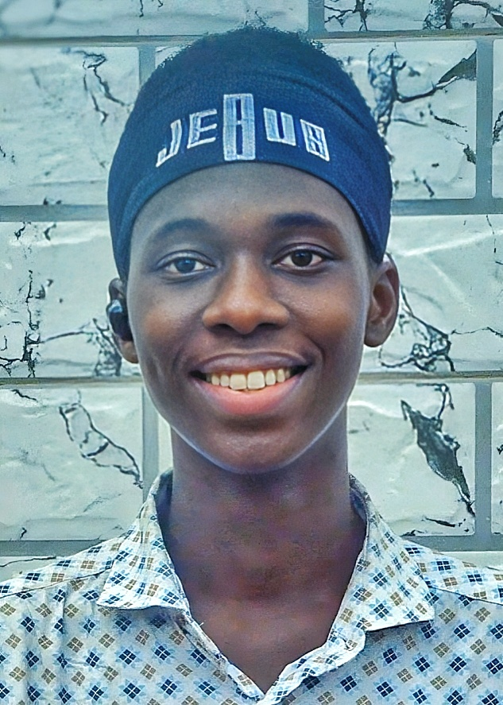
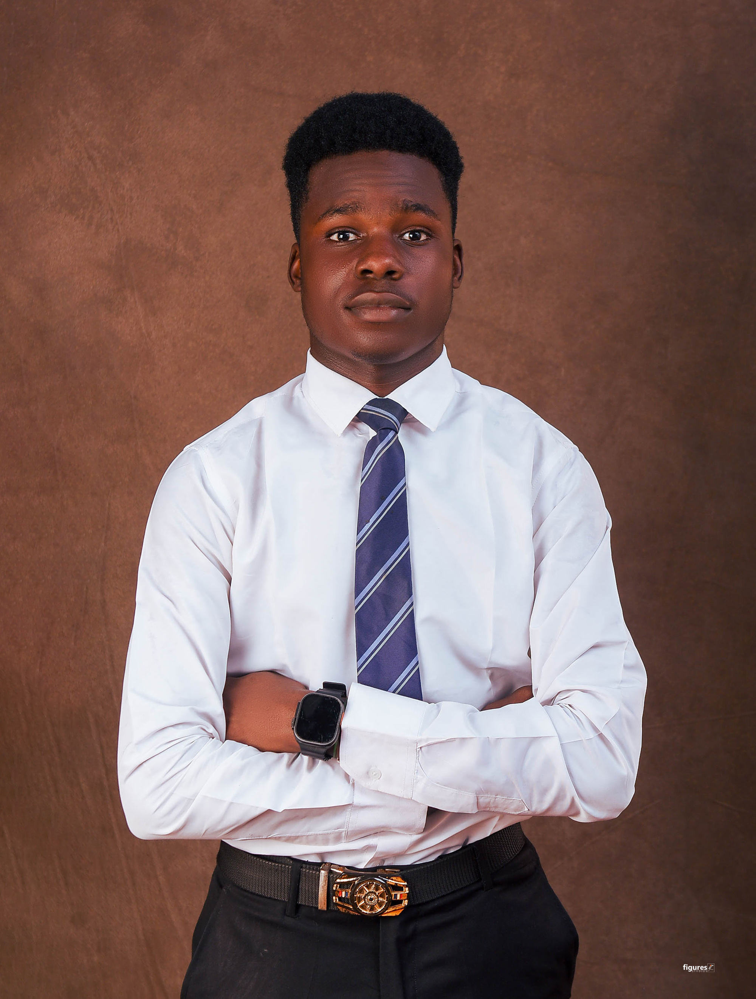

Our Story
About the
Movement
HendrixArts is more than a studio — it's a declaration. That original art, created with skill and care, belongs to every person — not just the privileged few.

Our Mission
Art For Everyone
The HendrixArts movement was born from a single, powerful conviction: that beautiful, original, handcrafted art should never be out of reach for ordinary people. For too long, commissioned artwork has been a privilege — priced beyond the everyday, reserved for the elite.
The #ARTISNOTARISTOCRATIC campaign dismantles that wall. Through three accessible tiers, we bring pen portraits — drawn by a continental award-winning artist — to your home, at prices that respect your pocket.
Accessibility
Art at prices that don't demand wealth. Three tiers, zero gatekeeping.
Craftsmanship
Every piece is drawn by hand — pen on paper. No prints. No shortcuts.
Excellence
Continental award-winning skill behind every stroke. Quality is non-negotiable.
Community
Rooted in Ibadan, connected to Nigeria and beyond. Art that belongs to us all.
The Creative Force
Meet the Founder

Joshua O. MakindeBIC Art Master Africa
Founder & Lead Artist
Joshua O.
Makinde
400-Level Civil Engineering · University of Ibadan
Joshua O. Makinde is the creative force behind HendrixArts — a 400-level Civil Engineering student at the University of Ibadan, Nigeria's first and finest institution, and a talent that simply refuses to be contained by a single discipline.
He is the national winner of the BIC Art Master Africa Competition, emerging as Nigeria's top entry from the entire country — a testament to artistry that has earned its place on a continental stage. Balancing the precision of engineering with the passion of visual art, Joshua specializes in pen drawings and portrait commissions that carry both technical discipline and raw artistic soul.
His work has been recognized at the highest levels, yet he remains rooted in his community. Driven by the belief that original art should not be a luxury, he launched the #ARTISNOTARISTOCRATIC Campaign — a bold, community-focused initiative designed to bring accessible, high-quality commissioned artwork to everyday people.
A continental award winner. A future engineer. A movement starter. Joshua Opeyemi Makinde is not waiting to arrive — he already has.
The People
The Team
Behind every movement is a group of dedicated people who believe in the vision. Meet the HendrixArts crew.
